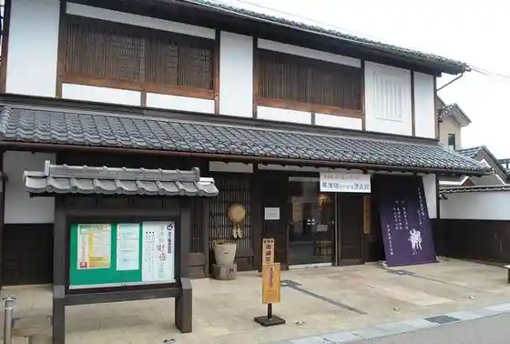
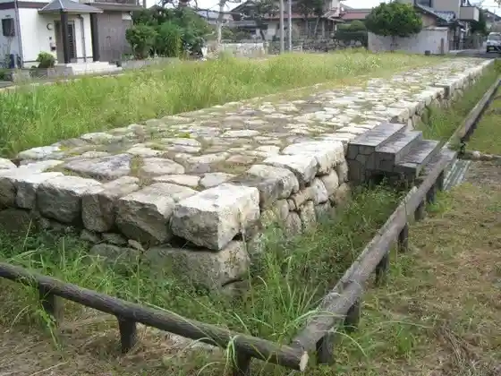
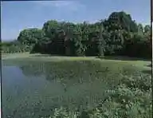
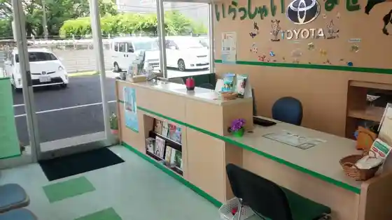

Kusatsu Yado Kaido Koryu Kan
Kusatsu, Shiga · 077-567-0030 · Official / source link

Yahashi Minato Ato
Kusatsu, Shiga · Official / source link

Aoji Joshi
Kusatsu, Shiga · 077-561-2429 · Official / source link

Toyotarentariisu Shiga Kusatsu Mise
Kusatsu, Shiga · 077-563-0100 · Official / source link

Biwa Lakeside no Kusatsu no Yado
Kusatsu, Shiga · Official / source link
Karasuma Peninsula
Kusatsu, Shiga · Official / source link
Kiyomune Tsuka
Kusatsu, Shiga · Official / source link
Roadside Station Kusatsu
Kusatsu, Shiga · 077-568-3610 · Official / source link
Kusatsu Amikahoru
Kusatsu, Shiga · 077-561-2345 · Official / source link
Kusatsu Yado Honjin
Kusatsu, Shiga · 077-561-6636 · Official / source link
Toyotarentariisu Shiga Kusatsu Eki Nishiguchi Mise
Kusatsu, Shiga · 077-567-5700 · Official / source link
Kusatsu Kawato Chi Park de Ai Hiroba
Kusatsu, Shiga · Official / source link
Yujo Umekawa no Haka
Kusatsu, Shiga · Official / source link
Biwako Museum
Kusatsu, Shiga · 077-568-4811 · Official / source link
Ota Shuzo Dokan Kura
Kusatsu, Shiga · Official / source link
Rokuha Park
Kusatsu, Shiga · 077-564-3838 · Official / source link
Oiwake Dohyo
Kusatsu, Shiga · 077-561-2422 · Official / source link
Yahashi Kihan Shima Park
Kusatsu, Shiga · 077-567-1969 · Official / source link
Tsune Zen Tera
Kusatsu, Shiga · 077-563-3700 · Official / source link
Bajiettorentaka Shiga
Kusatsu, Shiga · Official / source link
Muchi Saki Hachiman Shrine
Kusatsu, Shiga · 077-562-5762 · Official / source link
Yagura Dohyo
Kusatsu, Shiga · Official / source link
Rokkubei Garden
Kusatsu, Shiga · 077-568-3078 · Official / source link
Hasu Umi Tera (Shina Jizo)
Kusatsu, Shiga · 077-568-0749 · Official / source link
Tachigi Shrine
Kusatsu, Shiga · 077-562-0420 · Official / source link
Kyu Kusatsu Kawa no Sakura Namiki
Kusatsu, Shiga · Official / source link
TOYOTA SHARE Kusatsuesutopia Hotel Dai 1 Chushajo
Kusatsu, Shiga · 0800-666-2077 · Official / source link
Isasa Shrine
Kusatsu, Shiga · 077-562-1725 · Official / source link
Kusatsu Shiteiariina
Kusatsu, Shiga · Official / source link
Kusatsu Ritsu Puru
Kusatsu, Shiga · Official / source link
Ashi Ura Kan'onji Ato
Kusatsu, Shiga · 077-568-0548 · Official / source link
Shingu Shrine (Kusatsu)
Kusatsu, Shiga · 077-562-3067 · Official / source link
Kusatsu Ritsu Sogo Gym
Kusatsu, Shiga · Official / source link
Oisugi Shrine
Kusatsu, Shiga · 077-568-0136 · Official / source link
Sandai Shrine
Kusatsu, Shiga · 077-566-3219 · Official / source link
JR Kusatsu Eki
Kusatsu, Shiga · Official / source link
Kusatsu Kogan
Kusatsu, Shiga · Official / source link
Kusatsu Ritsu Suisei Shokubutsu Koen Mizu Forest
Kusatsu, Shiga · 077-568-2332 · Official / source link
ai Sai Hiroba
Kusatsu, Shiga · 077-568-2941 · Official / source link
Kusatsu Yakusho
Kusatsu, Shiga · 077-563-1234 · Official / source link